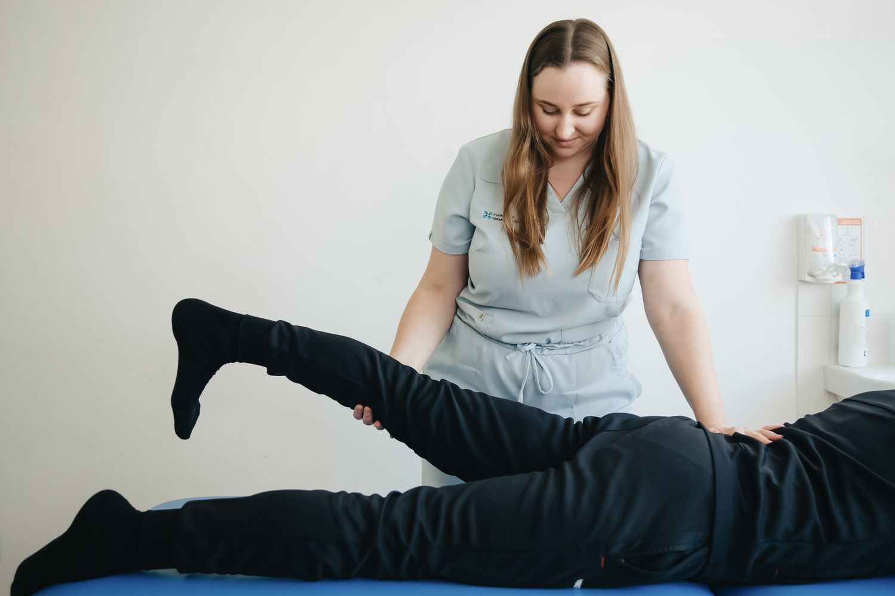

↗
Primeiro contato
Conte o que você precisa e tire suas primeiras dúvidas sobre o atendimento.
CUIDADO QUE ACOMPANHA VOCÊ / 01 — 04
Fisioterapia, reabilitação e movimento consciente em uma experiência de cuidado individualizado, do primeiro encontro a cada nova conquista.

V / F MOVIMENTO COM INTENÇÃO 01 / TRATAMENTO01 / TRATAMENTOS
Uma apresentação dos cuidados que uma clínica pode oferecer, sempre com atenção às necessidades e ao ritmo de cada pessoa.
Abordagem individual para dores, lesões e desafios relacionados à mobilidade.
SAIBA COMO COMEÇARAcompanhamento orientado ao processo de recuperação e retorno progressivo às atividades.
SAIBA COMO COMEÇARMovimento com atenção à força, equilíbrio, postura e percepção corporal.
SAIBA COMO COMEÇARTécnicas manuais voltadas ao cuidado, conforto e bem-estar do corpo.
SAIBA COMO COMEÇAR02 / NOSSA ABORDAGEM
É criar espaço para ouvir, entender e construir caminhos para uma vida com mais autonomia e confiança.
Cada jornada começa com o entendimento da história e das necessidades de quem chega.
Orientações e ajustes pensados para cada fase da evolução.
Uma experiência de cuidado que valoriza o cotidiano e a qualidade de vida.
03 / COMO FUNCIONA
Da primeira conversa ao acompanhamento, uma jornada mais clara e acolhedora para quem busca cuidado.
Conte o que você precisa e tire suas primeiras dúvidas sobre o atendimento.
Um momento de escuta e observação para entender necessidades e objetivos.
O acompanhamento é pensado de acordo com cada pessoa e suas possibilidades.
04 / SEU PRÓXIMO PASSO
Uma conversa é um bom começo. Prepare uma mensagem de agendamento para conhecer como a experiência funcionaria.
Este é um site demonstrativo. Nenhum contato é enviado ou armazenado. O WhatsApp comercial será configurado na versão final.